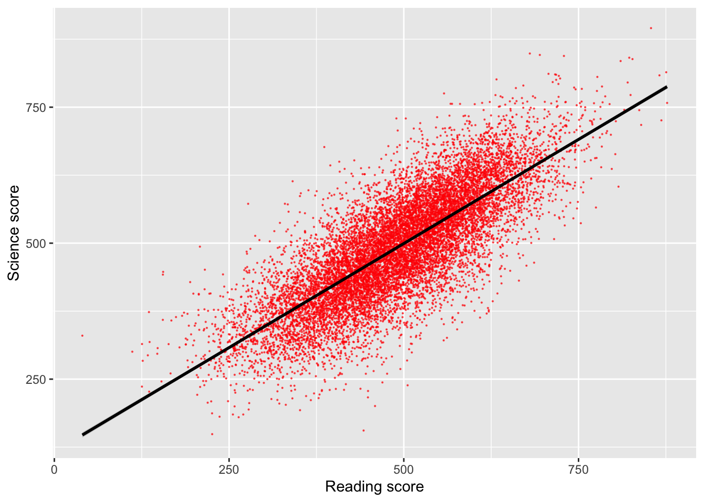
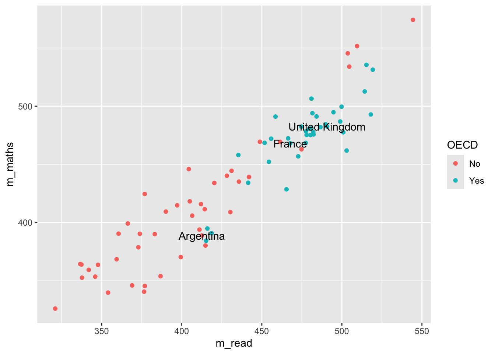
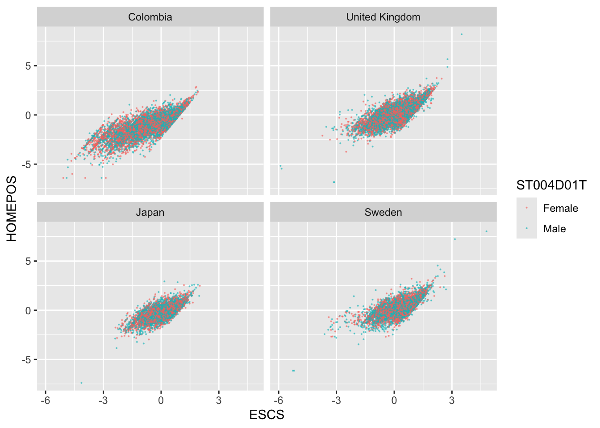
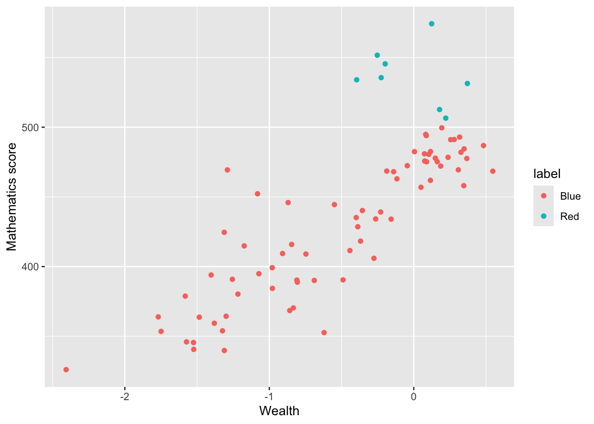

The tidyverse includes the incredibly powerful ggplot2 package. This package is pretty much the industry standard for making graphs for publication. ggplot2 is built on the grammar of graphics where you build graphs by specifying underlying attributes and layering geometric objects on top of each other. In the diagram below you can see how a graph is built from geometric objects (the things that are plotted such as points and bars) a scale, and plot annotations (e.g. a key, title etc). You can then apply faceting to the graph to automatically split one graph into multiple plots, allowing you to easily compare different groupings. Publications, such as the Financial Times, make daily use of ggplot2.
Adapted from A Layered Grammar of Graphics, Wickham, 2010
1 ggplot
The basic structure of ggplot code is to combine different graphing elements through the use of the + operator. To demonstrate this, let’s look at the relationship between a poverty indicator ESCS and the performance in Maths PV1MATH, by gender ST004D01T and country CNT:
library(tidyverse)# wrangle our data1graph_data <- PISA_2022 %>%filter(CNT %in%c("France", "United Kingdom"))# display a graph of the results2ggplot(data = graph_data,aes(x = ESCS, y = PV1MATH, colour = CNT)) +3geom_point(size=0.1) +4geom_smooth(method ='lm') +5facet_wrap(. ~ ST004D01T) +6ggtitle("Comparison of poverty indicator and Maths result, by gender and country") +theme(legend.position ="bottom")
1
Hopefully you can work out what lines 1-3 do from the previous chapter, let’s focus on the ggplot commands
2
line 7-8 set up the ggplot giving it the table object graph_data as its data input and setting up the aesthetics for the rest of the graph elements using columns from graph_data. The aes(<attribute>, <attribute>, ...) command allows us to specify aesthetic elements of the graph that will change dependent on the dataset we use. In the PISA_2022 data set, the variable ESCS refers to an index of economic status, and PV1Math, is the plausible value of the mathematics score. We set the x and y variables x=ESCS and y=PV1MATH , defining aes() inside ggplot() means we will pass down these values to subsequent geometric objects so we don’t have to define these x and y axis items again and again.
3
line 9 using the data and aes values defined on lines 7-8, geom_point uses these x and y values to draw a point for each student in our dataset. There are lots of different parameters we could give geom_point e.g. specifying size and shape, but here we are content with just setting the size to be 0.1 and using the defaults.
4
line 10 we add another geometric object on top of the points, this time we add a line of best fit geom_smooth, again this geometric object uses the values specified on lines 7-8, and we define the method as lm, to calculate a linear model line of best fit.
5
line 11 uses facet_wrap(. ~ CNT) to create a graph for each group of CNT in the dataset, i.e. a graph for each country defined on line 3.
6
lines 12 and 13, finally we customise the title of the graph, ggtitle, ready for display and place the legend underneath the graph
Important
Switching between the pipes and ggplot can get rather confusing. A very common mistake in using ggplot is to try and link together the geom_ elements with a pipe command %>% rather than the +.
2 geoms
There are about 40 different geometric objects in ggplot, allowing you to create almost any sort of graph. We will be exploring a few of them in detail, but if you want to explore others, please follow some of the links below:
geom_hline for adding static horizontal lines to a graph
geom_vline for adding static vertical lines to a graph
2.1 geom_bar
The geom_bar function is versatile, allowing the creation of bar, multiple bar, stacked bar charts and histograms. This first example shows how we can use bar charts to represent the number of cars in a household ST251Q01JA:
get the PISA_2022 dataset and remove all rows where ST251Q01JA is NA, storing this new dataset as plot_cars
2
pass the plot_cars to ggplot, as the dataset we are going to plot
3
specify the x values to be the values stored in ST251Q01JA, i.e. we will have a bar for each response given in ST251Q01JA: None, One, Two, Three or more.
4
geom_bar tell ggplot to make bars, it uses the aesthetic from line 5, to plot the x axis, note we haven’t given it a y value, this is auto-calculated from the number of students in each x group.
We can choose to let ggplot split the results into different groups for us by setting a fill option, in this case on the OECD status of the country, i.e. do students in OECD countries have more cars than those not in OECD countries, to do this, we add fill=OECD to the aes on line 2 below:
The bars are now coloured with a key, but, annoyingly, the bars are on top of each other which makes it hard to make direct comparisons. To compare different groups we need the bars to not be stacked, we want them next to each other, or in ggplot language, we want the bars to dodge each other, to do this we add the position=position_dodge() command to line 3 below:
ggplot can do a lot of the hard work when putting together bar charts, e.g. counting the number of students in each group, but there might also be times when you want to use pipes to calculate summary values that you then want plot. That is, you want to specify the heights of the bars yourself. To do this we will specify the y axis in the aes and use stat="indentity" to tell ggplot that’s what we’re doing. Take the example where you want to find the overall percentage of students for a range of countries getting over 500 in PV1SCIE:
ggplot(data=schools %>%filter(Phase =="Secondary"), aes(x=Region)) +# 1 no aes() around the x value # 2 missing close bracketsgeom_bar(aes(fill=Gender)) # 3 aes not as # 4 missing closing bracket
Create a bar chart showing the total number of students for each grouping of “How satisfied are you with each of the following: The way that you look” WB155Q02HA. Adjust this graph to see if there is a difference for this among females and males:
Plot bars for the number of Females and Males ST004D01T who answer each grouping for: “Confident can do in future: : Finding learning resources online on my own” ST355Q03JA. Make sure that the bars position_dodge() each other so we can compare the heights.
For France and the United Kingdom, plot the total number of students who gave each answer for ST324Q11JA “Agree/disagree: School has been a waste of time.”. Filter out all the NA values first !is.na(...)
[Extension] Explore other patterns in the school and student Pisa datasets.
2.2 geom_text
Our bar charts look great, but finding the actual value of each bar can be a little clumsy if we have to get a ruler out and read off the y-axis. Better would be for us to have numbers listed at the top of each bar by adding a geom_text element:
line 6 starts the geom_text command, telling the geom to use the countstatistic from ggplot, this means it will be able to fetch the number of rows in each grouping.
2
as we want the label to change for each bar element, we put label=after_stat(count) inside aes. The x location of the labels is inherited from line 4 and the y location will be calculated from the height of each bar
3
we want the labels to align to the bars, so we tell the geom_text to also position_dodge, passing a width=0.9 to the dodge function, so the labels line up above the columns,
4
finally, on line 9, we vertically adjust the labels vjust, so they sit on top of the columns.
Rather than adding the count, you might want to add the percentage that each bar represents, we can do this by changing the value given to label on line 5, below:
ggplot(data = plot_cars, aes(x=ST251Q01JA, fill=OECD)) +geom_bar(position=position_dodge()) +geom_text(stat='count', aes(label=100*(after_stat(count)/sum(after_stat(count))) %>%round(3), group = OECD), position =position_dodge(width=0.9),vjust=-0.5)
2.3 geom_point
To plot a scatter plot, we use geom_point. For example, to plot reading scores against mathematics scores in the UK we: a) create a data set of reading and science scores after filtering for UK; b) pass the data to ggplot; c) use aes to specify the x and y variables and d) plot with geom_point().
# Create a data.frame of the UK's science and reading scoresUKplot <- PISA_2022 %>%select(CNT, PV1READ, PV1SCIE) %>%filter(CNT =="United Kingdom")# Plot the data on a scatter graph using geom_pointggplot(UKplot, aes(x = PV1READ, y = PV1SCIE)) +geom_point()
That graph is quite dense, so we can use the alpha function to make the points slightly transparent, size to make them smaller, and set their colour. I will also tidy up the axis names and add a line (note that in: geom_smooth(method = "lm", colour = "black")method = "lm" sets the line to a straight (i.e., linear model, lm) line).
# Create a data.frame of the UK's science and reading scoresUKplot <- PISA_2022 %>%select(CNT, PV1READ, PV1SCIE) %>%filter(CNT =="United Kingdom")# Plot the data on a scatter graph using geom_point4ggplot(UKplot, aes(x = PV1READ, y = PV1SCIE)) +5geom_point(alpha =0.6, size =0.1, colour ="red") +6xlab("Reading score") +7ylab("Science score") +8geom_smooth(method ="lm", colour ="black")
4
line 4 - set the data to plot and set which variable goes on the x and y axis
5
line 5 - set the point size (size=0.1), colour (colour = "red") and opacity (alpha = 0.6)
6
line 6 - set the x-axis title
7
line 7 - set the y-axis title
8
line 8 - plot a straight line (method = "lm") and set its colour to black

Tip
You can set the colour of points using another variable inside the aesthetics. For example to change the colour of points by gender you can use aes(colour = ST004D01T) which gives the points for male and female students different colours.
# Create a data.frame of the UK's science and reading scoresUKplot <- PISA_2022 %>%select(CNT, PV1READ, PV1SCIE, ST004D01T) %>%filter(CNT =="United Kingdom")ggplot(UKplot, aes(x = PV1READ, y = PV1SCIE, colour = ST004D01T)) +geom_point(alpha =0.6, size =0.1) +xlab("Reading score") +ylab("Science score") +geom_smooth(method ="lm", colour ="black")
When you specify colours by a variable, ggplot with use the default colour palette (a red and a teal colour for two variables). To set your own choice of colours you can use scale_colour_manual(values = c()) linking the values of the varibale to colours. For example:
# Create a data.frame of the UK's science and reading scoresUKplot <- PISA_2022 %>%select(CNT, PV1READ, PV1SCIE, ST004D01T) %>%filter(CNT =="United Kingdom")ggplot(UKplot, aes(x = PV1READ, y = PV1SCIE, colour = ST004D01T)) +geom_point(alpha =0.6, size =0.1) +scale_colour_manual(values =c("Male"="red", "Female"="blue")) +# Manually change male points to red and female to bluexlab("Reading score") +ylab("Science score") +geom_smooth(method ="lm", colour ="black")
Note that you need to match the aesthetic you want to change, if you are plotting a bar plot, where the aesthetic impacting the colour is fill (rather than the colour for geom_point above), you need to use scale_fill_manual(values = c("Male" = "red", "Female" = "blue"))
# Create a data.frame of the UK's science scores by genderUKplot <- PISA_2022 %>%select(CNT, PV1SCIE, ST004D01T) %>%filter(CNT =="United Kingdom") %>%group_by(ST004D01T) %>%summarise(mean_sci =mean(PV1SCIE, na.rm = T))# Create a bar plot ggplot(UKplot, aes(x = ST004D01T, y = mean_sci, fill = ST004D01T)) +geom_bar(stat ="identity", position =position_dodge2()) +scale_fill_manual(values =c("Male"="lightgreen", "Female"="orange")) # Manually change bar fill
Additionally, when we make graphs we often want to label the data set, for example if we were to plot all the countries and their PV1MATH and PV1READ scores, we would get:
Here we have used colour="black" outside the aes to define the colour for all the labels, and check_overlap = TRUE which removes any labels that are on top of each other. It’s still a little bit hard to understand, and maybe we want to focus on just a few of the labels for countries we are interested in. For example
# make a vector of countries you want to have labels forfocus_cnt <-c("United Kingdom", "France", "Argentina")# add a new column to the plot_data where these countries areplot_data <- plot_data %>%mutate(focus = CNT %in% focus_cnt)plot_data
# A tibble: 80 × 5
# Groups: OECD [2]
OECD CNT m_read m_maths focus
<fct> <fct> <dbl> <dbl> <lgl>
1 No Albania 359. 368. FALSE
2 No United Arab Emirates 420. 434. FALSE
3 No Argentina 413. 389. TRUE
4 No Bulgaria 405. 418. FALSE
5 No Brazil 415. 380. FALSE
6 No Brunei Darussalam 428. 440. FALSE
7 No Dominican Republic 354. 340. FALSE
8 No Georgia 374. 390. FALSE
9 No Guatemala 377. 346. FALSE
10 No Hong Kong (China) 504. 545. FALSE
# ℹ 70 more rows
Now we can adjust out geom_text to only show those countries that we want to focus on:
changes the data that is being passed to the geom_text, it no longer uses the data defined in the ggplot command, but has a new dataset, that is filtered on focus == TRUE, i.e. only containing the countries that we want.
2
Note that the x and y mappings from line 2 are inherited by line 6, it’s only the data that we have redefined

Tip
geom_text is great, but you might find that ggrepel package useful as it’ll add lines connecting the text the data points. Using the plot_data from above:
Plot a scatter graph of reading scores on the y-axis (PV1READ) against wealth (HOMEPOS) on the x-axis for students in the UK. Colour the points by gender, add a linear trend line and rename the axes and title
answer graph
UKdata <- PISA_2022 %>%select(PV1READ, CNT, HOMEPOS, ST004D01T) %>%filter(CNT =="United Kingdom")ggplot(UKdata, aes(x = HOMEPOS, y = PV1READ, colour = ST004D01T)) +geom_point(size =0.1) +geom_smooth(method ="lm") +labs(x="Wealth", y ="Reading score", title ="UK reading vs wealth")
Using the PISA_2022 dataset, plot a graph for students from Norway to look at the relationship between Home Possessions (WLE)HOMEPOS and reading gradePV1READ. Colour each point with the gender ST004D01T of the student. Give the graph sensible x and y labels by using xlab("label") and ylab("label")
Using the PISA_2022 dataset for each country CNT, create a graph to explore how the median of the sense of school belonging BELONG relates to the median of the disciplinary climate in mathematics DISCLIM, adjust the colour of each point to reflect the mean of students in each country ESCS.
HINT: You’ll need create a new data frame with summarised variables for median_belong, median_discipline and mean_wealth.
HINT: To make your colours stand out more, add + scale_color_gradientn(colours = rainbow(3)) to the end of your plot.
answer graph
# display a graph of the resultsggplot(data = graph_data, aes(x = median_belong, y = median_discipline)) +geom_point(aes(colour = mean_wealth)) +scale_color_gradientn(colours =rainbow(3))
2.4 geom_density
An alternative type of plot is the density plot, which is a kind of continuous histogram. The density plot can be useful for visualising the achievement scores of students. For example, the mathematics scores of girls and boys (recall the gender variable is ST004D01T) in the US. We use na.omit to omit NAs. Notice, for the plot, I use aes to set my x variable, and then specify that the plot should fill by gender (fill=ST004D01T). Finally, in geom_density(alpha=0.6) I set the alpha to 0.6 to make the fill areas partially transparent.
Tip
The y-axis on a density plot is chosen so that the total area under the graph adds up to 1
# Create a data.frame of US Math data including genderUSMathplot <- PISA_2022 %>%select(CNT, PV1MATH, ST004D01T) %>%filter(CNT =="United States") %>%na.omit()# Plot a density chart, seeting the fill by gender, and setting the opacity to# 0.6 to show both gender plotsggplot(USMathplot, aes(x = PV1MATH, fill = ST004D01T)) +geom_density(alpha =0.6)
Tip
For a summary of all the elements of a graph you can change in ggplot - see this help sheet.
2.4.1 Questions
Plot a density graph of maths scores for students in the UK, filling by gender.
answer graph
UKdata <- PISA_2022 %>%select(PV1MATH, CNT, ST004D01T) %>%filter(CNT =="United Kingdom")ggplot(UKdata, aes(x = PV1MATH, fill = ST004D01T, alpha =0.5)) +geom_density() +labs(x ="Maths score", title ="UK maths score", fill ="gender")
Create a dataframe of ESCS (social class data) for the countries: the UK, Brazil, Qatar and Jamaica. Plot the results as a density graph with a curve for each country.
answer graph
country_data <- PISA_2022 %>%select(CNT, ESCS) %>%filter(CNT =="United Kingdom"| CNT =="Brazil"| CNT =="Qatar"| CNT =="Jamaica")ggplot(country_data, aes(x = ESCS, fill = CNT, alpha =0.5)) +geom_density() +labs(x ="ESCS (class)", title ="Distribution of class in 4 countries", fill ="country")
3 faceting
Faceting allows you to easily create multiple graphs from one dataset and one ggplot definition by splitting the data on different factors, by defining:
facet_grid(<column_to_split> ~ .)
or
facet_grid(. ~ <column_to_split>)
Looking at the PISA_2022 dataset, we can plot the HOMEPOS and reading test outcome PV1READ variables against each other:
# create a subset of the data for plottingplot_data <- PISA_2022 %>%select(OECD, CNT, HOMEPOS, PV1READ) %>%filter(CNT %in%c("Germany", "United Kingdom"))ggplot(data=plot_data, aes(x=HOMEPOS, y=PV1READ)) +geom_point() +geom_smooth() +theme(legend.position ="bottom")
But it isn’t clear how this graph varies between countries. We could try plotting separate graphs for each country, but there is a faster way, using:
+ facet_grid(CNT ~ .)
ggplot will automatically create graphs for subsets of plot_data, split on each different country in CNT
If the column you want to split on it on the left hand side of facet_grid(CNT ~ .), then the graphs will be piled on top of each other, if it’s on the right hand side facet_grid(. ~ CNT), then they’ll be side by side.
Take a subset of the overall dataset, by filtering on a few countries, take another one of your plots and use facet_grid(CNT ~ .) to explore the graphs for different countries.
3.1 Exporting plots
ggplot can export data in a variety of formats suitable for printing, publication and the web. Once you have created a graph and stored it in an object my_graph <- ggplot(..., the command to save the graph to your hard drive is:
If you want to change the output format, just change the extension of the file you are saving:
“poverty_size.pdf” perfect for publication and printing, potentially large file size
“poverty_size.svg” the same as pdf, also suitable for putting on webpages
“poverty_size.png” smaller file size, suitable for websites and presentations
“poverty_size.jpg” similar output to png
4 Additional support on graphing
4.1 Using R to do descriptive statistics and plot graphs
You can find the code used in the video below:
Show the code
# Introduction to plotting graphs## Download data from /Users/k1765032/Library/CloudStorage/GoogleDrive-richardandrewbrock@gmail.com/.shortcut-targets-by-id/1c3CkaEBOICzepArDfjQUP34W2BYhFjM4/PISR/Data/PISA/subset/Students_2022_RBDP_none_levels.rds# You want the file: Students_2022_RBDP_none_levels.rds# and place in your own file system# change loc to load the data directly. Loading into R might take a few minuteslibrary(tidyverse)loc <-"/Users/k1765032/Library/CloudStorage/GoogleDrive-richardandrewbrock@gmail.com/.shortcut-targets-by-id/1c3CkaEBOICzepArDfjQUP34W2BYhFjM4/PISR/Data/PISA/subset/Students_2022_RBDP_none_levels.rds"PISA_2022 <-read_rds(loc)# Calculating means of groups# The PISA_2022 dataframe is piped to a new dataframe MeanPISA# The data are grouped by the country variable (CNT)# The countries of interest are chosen (UK, France, Germany and the US)# The summarise function is used to output the mean and standard deviation score for each country# on the Science Plausible Value (PV1SCIE) and NAs are ignored na.rm=TRUEMeanPISA <- PISA_2022 %>%group_by(CNT) %>%filter(CNT=="United Kingdom"| CNT=="France"| CNT=="Germany"| CNT=="United States") %>%summarise(mean_sci =mean(PV1SCIE, na.rm=TRUE), sd_sci=sd(PV1SCIE, na.rm=TRUE)) print(MeanPISA)# To plot data we can use the ggplot function. # We will start by plotting a column graph use geom_col# We specify the data set for ggplot to use (MeanPisa) and then # define the x and y variables:# ggplot(MeanPISA,# aes(x=CNT, y=mean_sci))# geom_col() (Note the plus is on the line before) plots the graph and the fill colour is set to red# The next three lines set the formatting of the axis text and add x and y axis labelsggplot(MeanPISA,aes(x=CNT, y=mean_sci))+geom_col(fill="red") +theme(axis.text.x =element_text(angle =90, hjust=0.95, vjust=0.2, size=10)) +xlab("Country") +ylab("Science Score")# For plotting a scatter plot or PISA reading scores against science scores#, first we make a managable data set# I will filter the data set to include only the UK data# and remove any NAsUKData <- PISA_2022 %>%filter(CNT=="United Kingdom") %>%drop_na(PV1SCIE)# This time I will use ggplot to plot a scatter graph# I feed UKDATA to ggplot, specify the x (PISA Reading score)# And y (PISA science score). This time, I have linked the colour# to a variable (ST004D01T) which is the gender value, giving# plot points of different colours for boys and girls# To produce a scatter plot, I use geom_point to plot points,# Giving the size of point and the transparency (alpha=0.5) -# some transparency of points is helpful when plots become dense# The x and y lables are added# Finally, a line is plotted - geom_smooth(method='lm')# sets the line to a linear ('lm') lineggplot(UKData,aes(x=PV1READ, y=PV1SCIE, colour=ST004D01T)) +geom_point(size=0.1, alpha=0.5) +ylab("Science Score") +xlab("Reading Score") +geom_smooth(method='lm')# Where R becomes very powerful is being able to produce multiple charts rapidly# In the code below, I plot reading against science scores as above, but this time# Use the entire data set - for the whole world!# All the steps are the same, except, I use the facet_wrap, a way to create multiple# graph panels - the instruction creates a set of graphs for each country WorldData <- PISA_2022 %>%drop_na(PV1SCIE)ggplot(WorldData,aes(x=PV1READ, y=PV1SCIE, colour=ST004D01T)) +geom_point(size=0.1, alpha=0.5) +ylab("Science Score") +xlab("Reading Score") +geom_smooth(method='lm') +facet_wrap(CNT~.)
5 Seminar activities
5.1 Task 1 - Bar graphs
ST038Q08NA asks students in the past 12 months, how often do other students spread nasty rumours about them. Plot a graph of how often students spread rumours in the UK and France.
Extensions: You can use xlab("<x axis label>") and ylab("<x axis label>") to label the axes. A title can be added using: ggtitle("<title"). ’You can rotate the text on the x axis through 90 degrees using: theme(axis.text.x = element_text(angle = 90, vjust = 0.5, hjust=1))
Answer
# Select country and question data and Filter for the UK and FranceRumplot <- PISA_2022 %>%select(CNT, ST038Q08NA) %>%filter(CNT =="United Kingdom"|CNT =="France")# use rumour data to create a graph# Set x as the item on culture and fill by the country# Remember to use position dodge to plot the bars side by sideggplot(data = Rumplot,aes(x = ST038Q08NA, fill = CNT)) +geom_bar(position ="dodge2") +xlab("Do students spread rumours about you?") +ylab("Count")+ggtitle("Spreading rumours: France vs. the UK") +theme(axis.text.x =element_text(angle =90, vjust =0.5, hjust=1))# Rotate axis text
PA195Q01JA asks students how many books are in their home. Plot a bar graph for students in Germany. Then plot a graph splitting the data by gender (ST004D01T).
Hint: to split by bars by a variable use the aes(fill= <variable>).
Answer
# Create a data set related to books in Germany and include genderBookplot <- PISA_2022 %>%select(CNT, PA195Q01JA, ST004D01T) %>%filter(CNT =="Germany")# use book data to create a graphggplot(data = Bookplot,aes(x = PA195Q01JA, fill=PA195Q01JA)) +geom_bar(position ="dodge2") +theme(axis.text.x =element_text(angle =90, vjust =0.5, hjust =1))+# To rotate the x-axis textxlab("Number of books in the home")+ylab("Count")+ggtitle("Number of books in the home for German students by gender")# use fill by gender to split the dataggplot(data = Bookplot,aes(x = PA195Q01JA, fill = ST004D01T)) +geom_bar(position ="dodge2") +theme(axis.text.x =element_text(angle =90, vjust =0.5, hjust =1))+# To rotate the x-axis textxlab("Number of books in the home")+ylab("Count")+ggtitle("Number of books in the home for German students by gender")
Plot a bar graph of the mean science scores of all the countries in the PISA data frame
Hint one: you will need to create a summary dataframe using group_by and summarise and then geom_bar(stat="identity"). Remember to use stat=identity when you want geom_bar to plot the values in the data.frame (because you have already summarised) rather than counting the values.
Hint two: you can reorder the x-axis with the reorder function. Rather than a simple x=CNT you can put x=reorder(CNT, -SciMean) which will reorder the x axis in descending order (because of the - sign) of SciMean.
Answer
# Create a data set of science scores, and use group_by and summarise to create mean scores by countrySciplot <- PISA_2022 %>%select(CNT, PV1SCIE) %>%group_by(CNT)%>%summarise(MeanSci =mean(PV1SCIE))# Use geom_bar to plot the dataggplot(data = Sciplot,aes(x =reorder(CNT, -MeanSci), y = MeanSci, fill = MeanSci)) +geom_bar(stat ="identity") +theme(axis.text.x =element_text(angle =90, vjust =0.5, hjust =1))
5.2 Task 2 - Scatter graphs
For students in the UK and Brazil, plot science scores (PV1SCIE) by the index of economic, social and cultural status (ESCS). (You may have come across this variable in your studies as socio-economic status, similar to the idea of ‘social class’.) Then try varying the colour of points by country, and add a line for each.
Answer
plotdata<-PISA_2022 %>%select(CNT, PV1SCIE, ESCS)%>%filter(CNT =="United Kingdom"|CNT =="Brazil")# Plot the data as a scatter graph with geom_point()ggplot(data=plotdata,aes(x = ESCS,y = PV1SCIE, colour = CNT)) +geom_point(alpha =0.2, size =0.6)+labs(x ="Index of economic, social and cultural status",y ="Science Score")+ (geom_smooth(method ='lm'))+theme(legend.position ="bottom")+labs(CNT ="Country") # Changes ST004D01T to gender for the plot
For students in the UK, plot a graph of science scores (PV1SCIE) against reading scores (PV1READ). Add a straight line and vary the colour of points by students’ gender.
Answer
plotdata<-PISA_2022 %>%select(CNT, PV1SCIE, PV1READ, ST004D01T) %>%filter(CNT =="United Kingdom")# Plot the data as a scatter graph with geom_point()ggplot(data = plotdata,aes(x = PV1READ, y = PV1SCIE, colour = ST004D01T)) +geom_point(alpha =0.6, size =0.6) +labs(x ="Reading Score", y ="Science Score") +geom_smooth(method ='lm') +theme(legend.position ="bottom")+labs(colour ="Gender") # Changes ST004D01T to gender for the plot
Challenging task (!): Plot a graph of mean mathematics score (PV1MATH) by economic, social and cultural status (ESCS) and highlight countries with mathematics scores above 800. An outline of how to achieve this:
Create a data frame of mean PV1MATH and ESCS by country using group_by and summarise. (Don’t forget to use na.RM=TRUE)
Use mutate and ifelse to add a new variable, called text which contains the names of countires with mathematics scores over 550.
Use geom_label to add these data points to the x and y coordinates of the countries e.g. geom_text_repel(PV1MATHmean, ESCSmean, label).
Answer
# Create a data frame of ESCS scores and mathematics scoresplotdata<-PISA_2022%>%select(CNT, ESCS, PV1MATH)%>%group_by(CNT)%>%# group_by countrysummarise(PV1MATHmean =mean(PV1MATH), #calculate meansESCSmean =mean(ESCS, na.rm =TRUE))%>%mutate(text =ifelse(PV1MATHmean >550, as.character(CNT), "")) # Use mutate to create a newc columns called text# If PV1MATHmean is over 800 set text to equal CNT, otherwise set it to blank ("")# Plot the data, putting mean math score on y and ESCS mean on the x# Set the colour of points by the mean math scoreggplot(plotdata, aes(y=PV1MATHmean, x = ESCSmean, colour = PV1MATHmean))+geom_point()+geom_text_repel(aes(y = PV1MATHmean, x=ESCSmean, label = text))+xlab("Mean ESCS score")+ylab("Mean mathematics score")+ggtitle("Comparison of mean mathematics and mean ESCS score")+theme(legend.position ="none") # Hide the legend
5.3 Task 3 - Plot distributions of wealth scores
Use a scatter plot to show the correlation between HOMEPOS and ESCS. Use a facet_wrap to show the charts for the UK, Japan, Colombia and Sweden. Discuss the different relationships between the two variables across the countries.
Tip
Note that the PISA variable, Economic, Social and Cultural Status ESCS is based on highest parental occupation (‘HISEI’), highest parental education (‘PARED’), and home possessions (‘HOMEPOS’), including books in the home. Do consider the implications of this definition.
Show the answer
# Create a data frame with the ESCS, gender (ST004D01T) and HOMEPOS variables for the 4 countries WealthcompPISA<-PISA_2022 %>%select(CNT, ESCS, HOMEPOS, ST004D01T)%>%filter(CNT =="Japan"| CNT =="United Kingdom"| CNT =="Colombia"| CNT =="Sweden")# Use ggplot to create a scatter graph# Set the x variable to ESCS and the y to HOMEPOS, set the colour to gender# Set point size and transparency# Facet wrap to produce graphs for each countryggplot(WealthcompPISA, aes(x = ESCS, y = HOMEPOS, colour=ST004D01T))+geom_point(size=0.1, alpha=0.5)+facet_wrap(.~CNT)

5.4 Task 4 - Plot distributions of scores
Use geom_density to plot distributions to plot the distribution of Japanese and UK mathematics scores - what patterns do you notice?
Tip
To plot a distribution, you can use geom_density to plot a distribution curve. In ggplot you specify the data, and then in aes set the x-value (the variable of interest, and set the fill to change by different groups). Within the geom_density call you can specify the alpha, the opacity of the plot.
For example, to plot science scores in the UK by gender, you would use the code below:
# Create a data frame of UK science scores including genderUKSci<-PISA_2022 %>%select(CNT, PV1SCIE, ST004D01T) %>%filter(CNT =="United Kingdom")# Plot the density chart, changing colour by gender, and setting the alpha (opacity) to 0.5ggplot(data = UKSci,aes(x = PV1SCIE, fill = ST004D01T)) +geom_density(alpha =0.5)
Show the answer
# Create a data frame of UK and Japanese mathematics scoresJPUKMath<-PISA_2022 %>%select(CNT, PV1MATH) %>%filter(CNT =="United Kingdom"|CNT =="Japan")# Plot the density chart, changing colour by country, and setting the alpha (opacity) to 0.5ggplot(data = JPUKMath,aes(x = PV1MATH, fill = CNT)) +geom_density(alpha =0.5)
5.5 Task 5 - Plot distributions of scores by gender
Examine gender differences: Plot the distributions of mathematics achievement in the UK by gender. What patterns can you see?
Plot density graphs of gender differences in mathematics scores in the UK, Spain, Japan, Korea and Finland. Hint use facet_wrap(.~CNT)
Show the answer
# Create a data frame of mathematics scores, gender and country# Filter by the five countries of interestMathGender <- PISA_2022 %>%select(CNT, PV1MATH, ST004D01T) %>%filter(CNT =="United Kingdom"|CNT =="Spain"|CNT =="Japan"| CNT=="Korea"|CNT =="Finland")# Plot a density graph of mathematics scores, splitting into groups, with coloured fills by gender. Set transparency to 0.5 to show overlap ggplot(data = MathGender,aes(x = PV1MATH, fill = ST004D01T)) +geom_density(alpha =0.5) +facet_wrap(.~CNT)
5.7 Task 7 - Plot a scatter graph
Plot a scatter graph of mean mathematics achievement (y-axis) by mean wealth (x-axis) with each country as a single point. Hint: You will first need to use group_by and then summarise to create a data frame of mean scores.
Tip
Note that the competency tests for Vietnam in PISA are all NA at the student level. This is because many students finish compulsory schooling before 15. Hence, we add an na.omit to remove the data from Vietnam
Show the answer
# Create a summary data frame# Group by country, and then summarise the mean meath and wealth scoresWealthdata <- PISA_2022 %>%select(CNT, HOMEPOS, PV1MATH) %>%filter(CNT!="Vietnam")%>%# To cut Vietnam due to lack of datagroup_by(CNT) %>%summarise(MeanWealth=mean(HOMEPOS, na.rm =TRUE),MeanMath=mean(PV1MATH, na.rm =TRUE))# Use ggplot to create a scatter graphggplot(data = Wealthdata,aes(x = MeanWealth, y = MeanMath)) +geom_point(alpha =0.5, colour="red") +xlab("Home Possessions (Wealth proxy)") +ylab("Mathematics score")
In the previous scatter of mathematics vs wealth scores, highlight outlier countries (any score of over 500) in a different colour. Hint, mutate the data frame to include a label column (by the condition of the maths score being over 550). Then set the colour in ggplot by theis label column.
Show the answer
# Create a summary data frame# Group by country, and then summarise the mean math and wealth scoresWealthdata <- PISA_2022 %>%select(CNT, HOMEPOS, PV1MATH) %>%group_by(CNT) %>%filter(CNT!="Vietnam")%>%summarise(MeanWealth =mean(HOMEPOS, na.rm =TRUE),MeanMath =mean(PV1MATH, na.rm =TRUE)) %>%mutate(label=ifelse(MeanMath >500, "Red", "Blue")) # mutate to add a label# the column label is "Red" if MeanMath > 500 and "Blue" otherwise# Use ggplot to create a scatter graphggplot(data = Wealthdata,aes(x = MeanWealth, y = MeanMath, colour = label)) +geom_point() +xlab("Wealth") +ylab("Mathematics score")

Add the country names as a label to the outliers. Hint: add an additional column labelname to which the country name as.charachter(CNT) is added if the MeanMath score is over 500. Hint: you can use geom_label_repel to add the labels. You can set: (aes(label = labelname), colour = "black", check_overlap = TRUE) to give the source of the lables (labelname) the colour and to force the lables not to overlap.
Show the answer
# Mutate to give a new column labelname, set to the country name (CNT) if Meanmath is over 500, or NA if not.Wealthdata <- PISA_2022 %>%select(CNT, HOMEPOS, PV1MATH) %>%group_by(CNT) %>%filter(CNT!="Vietnam")%>%summarise(MeanWealth =mean(HOMEPOS, na.rm =TRUE),MeanMath =mean(PV1MATH, na.rm =TRUE)) %>%mutate(label =ifelse(MeanMath>500, "Red", "Blue")) %>%mutate(labelname =ifelse(MeanMath>500, as.character(CNT), NA))# Use geom_label_repel to add the labelname column to the graphggplot(data = Wealthdata,aes(x = MeanWealth, y = MeanMath, colour = label)) +geom_point() +geom_label_repel(aes(label = labelname), colour ="black", check_overlap =TRUE) +xlab("Wealth") +ylab("Mathematics score")
5.8 Task 8 - Plot Likert responses using facet wrapping
Examine Likert responses by country using facet plot.
For ST125Q01NA - How old were you when you started early childhood education? Plot responses, first, for the whole data set, then facet plot for the UK, Germany, Belgium, Austria, France, Poland, Estonia, Finland and Italy.
• What international differences can you note?
Show the answer
# Create a data frame of childhood education data for the whole data frame ChildhoodEd<-PISA_2022 %>%select(CNT, ST125Q01NA) %>%group_by(CNT)# Plot a bar graph of responses ggplot(data = ChildhoodEd,aes(x = ST125Q01NA, fill = ST125Q01NA)) +geom_bar() +xlab("How old were you when you started early childhood education?") +theme(axis.text.x =element_text(angle =90, vjust =0.5, hjust =1))
Then use faceting to split the plots by country
Show the answer
# Repeat filtering for UK, Germany, Belgium, Austria, France, Poland, Estonia, Finland and ItalyChildhoodEd <- PISA_2022 %>%select(CNT, ST125Q01NA) %>%filter(CNT =="United Kingdom"|CNT =="Germany"| CNT =="Belgium"| CNT =="Austria"| CNT =="France"| CNT =="Poland"| CNT =="Estonia"| CNT=="Finland"| CNT=="Italy")# Plot the data and facet wrap by countryggplot(data = ChildhoodEd,aes(x = ST125Q01NA, fill = CNT))+geom_bar()+xlab("How old were you when you started early childhood education?") +theme(axis.text.x =element_text(angle =90, vjust =0.5, hjust =1)) +facet_wrap(. ~ CNT)
5.9 Task 9 - Compare the association between mathematics and science PV values across three diverse countries
Plot scatter plots of science versus mathematics achievement in United Kingdom, Qatar and Brazil • What differences can you see between the countries?
Show the answer
# Create a data frame of science and mathematics scores, across the countries Including gender)SciMaths <- PISA_2022 %>%select(CNT, PV1MATH, PV1SCIE, ST004D01T) %>%filter(CNT =="Colombia"| CNT =="New Zealand"| CNT =="Qatar"| CNT =="Israel") %>%droplevels()# Scatter plot the data, faceting by countryggplot(data = SciMaths, aes(x = PV1MATH, y = PV1SCIE, colour = ST004D01T))+geom_point(size =0.1, alpha =0.5)+facet_wrap(.~CNT)
Frequency plots are often used to show data following a normal distribution, To produce a frequency plot, we need to divide data into counts, each covering a range of data. This is called ‘binning’. There is a choice to be made here, in how large or small to make the divisions (‘bins’) - this can affect how the data looks when graphed.
For example, to produce a frequency plot of science scores in the UK, we can first run a summary command on PV1SCIE to find the minimum and maximum score:
# Find the range of science scoresummary(PISA_2022$PV1SCIE)
Min. 1st Qu. Median Mean 3rd Qu. Max.
0.0 371.7 444.5 450.5 524.7 895.4
If we wanted to plot a frequency chart of heights, we might divide the range of scores (from 0-895.4) into bins of 20 points. To do this we can use the cut(<field>,<breaks>) function within the mutate command on a ‘data.frame’. The <field> specifies the range (i.e. from around 0-900) and <breaks> the size of bins.
In the example below, we use cut(PV1SCIE, breaks=seq(0,900,20)) to create a new vector (column in the table) with the science scores divided up into bins. The specification breaks=seq(0,900,20)) sets how the data are divided up - into bins (i.e. groups of respondents) of scores starting at 0 and rising to 900 in steps of 20.
# Creates distribution of science scoresbinnedsize <- PISA_2022 %>%# Creates a new data frame with binned dataselect(PV1SCIE, CNT)%>%# Select the columns neededfilter(CNT =="United Kingdom")%>%mutate(BinnedPV1SCIE =cut(PV1SCIE, breaks=seq(0, 900, 20)))%>%na.omit() # Drop any NAs# Plot the data as a bar graphggplot(binnedsize,aes(x = BinnedPV1SCIE)) +geom_bar(fill ="dark green") +theme(axis.text.x =element_text(angle =90, vjust =0.5, hjust =1)) +labs(y ="Number of responses", x ="Scores range")
Create a graph of the binned counts of mathematics scores in Malta. Don’t forget to run a summary command first to get a sense of the range in values.
Tip
To find out the range of a vector, you can use the range function in the console - for example, to get a sense of the range of science scores for the whole data frame, we can type: range(PISA_2022$PV1SCIE, na.rm=TRUE). Notice that, because there are NAs in the data, we need to tell the function to ignore them, using na.rm=TRUE.
Answer
# Creates distribution of schools by sizebinnedsize <- PISA_2022 %>%# Creates a new data frame with binned dataselect(PV1MATH, CNT)%>%# Select the column I needfilter(CNT =="Malta")%>%mutate(BinnedPV1MATH =cut(PV1MATH, breaks=seq(20,900,20)))%>%na.omit() # Drop any NAs# Plot the data as a bar graphggplot(binnedsize,aes(x = BinnedPV1MATH)) +geom_bar(fill ="orange") +theme(axis.text.x =element_text(angle =90, vjust =0.5, hjust =1)) +labs(y ="Number of schools", x ="Pupil range")
Tip
To find out a range of a vector, you can use the range function in the console - for example, to get a sense of the range of numbers of students on SEN support. I can type: range(DfE_SEN_data$SEN.support)
Plot a binned geom_bar graph of the HOMEPOS scores in the UK and Belarus on the same axes.
Answer
# Creates distribution of schools by sizebinnedwealth <- PISA_2022 %>%# Creates a new data frame with binned dataselect(HOMEPOS, CNT)%>%# Select the column I needfilter(CNT =="Belarus"| CNT =="United Kingdom")%>%mutate(BinnedHOMEPOS =cut(HOMEPOS, breaks=seq(-8, 5, 0.25)))%>%na.omit() # Drop any NAs# Plot the data as a bar graphggplot(binnedwealth,aes(x = BinnedHOMEPOS, fill = CNT)) +geom_bar() +theme(axis.text.x =element_text(angle =90, vjust =0.5, hjust =1)) +labs(y ="Frequency", x ="Wealth")
6.2 Task 2 - Histograms
An alternative to binning the data yourself is to use the geom_histogramgeom in ggplot. That allows you to plot a histogram and control the size of the bins, without having to bin the data yourself. For example, to create a histogram of wealth scores in the UK, you set the x value in aesto wealth (HOMEPOS) and specify the binwidth within geom_histogram. You can also set a fill colour within the geom_histogram.
# Creates data frame of wealth scores in the UKUK_wealth <- PISA_2022 %>%select(HOMEPOS, CNT) %>%# Select the columns neededfilter(CNT =="United Kingdom") # filter for the UK# Plot the data as a histogram ggplot(UK_wealth,aes(x = HOMEPOS)) +geom_histogram(binwidth =0.1, fill ="dark green")
Plot a histogram of the PV1SCIE science scores for boys and girls in the UK and in Japan. Hint: You will need to use position = position_dodge2() inside the geom_histrogram to make sure the plots ovelap rather than stack.
Answer
# Creates data frame of science scores in the UK and JapanSci_scores <- PISA_2022 %>%select(PV1SCIE, CNT, ST004D01T) %>%# Select the columns neededfilter(CNT =="United Kingdom"| CNT =="Japan") # filter for the UK and Japan# Plot the data as a histogram ggplot(Sci_scores,aes(x = PV1SCIE, fill = ST004D01T)) +geom_histogram(binwidth =30, alpha =0.5, position =position_dodge2()) +facet_wrap(~CNT)
6.3 Task 3 - Plotting data on maps
As well as graphs, R can also plot data onto maps. The geom_map function will plot a map of a region and you can either plot points (using geom_point) or fill regions by drawing a polygon of the shape of that region (using geom_polygon).
For example, imagine we created a data frame of the mean science scores of countries in the PISA data:
# Pipe the total data frame and calculate the mean science scores# To match with another data frame we will use, we will rename CNT to regionWorldSci <- PISA_2022 %>%select(CNT, PV1SCIE) %>%group_by(CNT) %>%summarise(meanSci =mean(PV1SCIE)) %>%rename(region = CNT)
In order to plot the data onto a map, colouring the countries by science scores, we need data which gives the coordinates of the edges of the countries. This data is available from the map_data function in ggplot. First we load the latitude and longitude data into a new data frame world_data. In the next steps we will then use left_join to combine it with the science data, but we need to tidy the data to match the PISA data, before we can join the two data sets.
# Create a data frame of country latitude and longitude dataworld_data <-map_data(map ="world")
One quirk of the two data frames (world_data and the PISA data) is that some countries have different names. For example, PISA uses ‘United Kingdom’, but the rworldmap package uses ‘UK’. We can change the names of countries in the PISA data.frame to match those in rworldmap, using the case_when function with mutate. For example, if we want to change all United Kingdom entries to UK we use: mutate(region = case_when(region == "United Kingdom" ~ "UK". The final part of the case_when sets the default - .default = region - that means if none of the matches are found, then region is set to region - i.e. it is left unchanged.
# The names of two countries in the PISA data frame and world_data data frame don't match (UK/United Kingdom and US/United States). Change the level names in the PISA data to match the world_data WorldSci <- WorldSci %>%mutate(region =case_when( region =="United Kingdom"~"UK", region =="United States"~"USA",.default = region))
Now that the country names in the two data frames match, we can use left_join to combine them.
# Add the country latitude and longitude data to the PISA scoresWorldSci <-left_join(WorldSci, world_data, by ="region")
To add labels, you can create a data.frame, with only the country names, and their longitudes and latitudes (the mean of the country longitude and latitude), to use as the labels. You can then add geom_text_repelto add the labels. The repel means the labels won’t overlap. Given the number of countries, using geom_text_repel creates a warning that some labels won’t fit.
To plot the data, we use ggplot, with the data frame to WorldSci, and the x and y variables set to long and lat, the longitudes and latitudes. We specify that we want to keep the grouping of the data frame (i.e. by country).
First we use geom_map to plot a blank map using the data - this will be the base for the highlighted countries. In the aes we give the longitudes and latitudes, and, as we want a blank map, set the fill to white and the line colour to black.
Finally, we use geom_polygon to draw coloured shapes, with the fill changing by the value of meanSci. To make the map look nice, I have used a pre-defined colour scale.
# Use geom_map to plot the basic world map (fill is white, line colour is black)# Use geom_polygon to plot the PISA data# Add a colour scaleggplot(data = WorldSci, aes(x = long, y = lat, group=group)) +geom_map(data = world_data, map = world_data, aes(map_id = region), fill ="white", colour ="black")+geom_polygon(aes(fill = meanSci)) +scale_fill_viridis_c(option ="viridis")
In ggplot, by default, the aesthetics are passed from one layer to the next. In our first aes call we set a grouping (group=group). However, when we come to the labeling function geom_text_repel, the data frame Labels is not grouped. We therefore need to use new aesthetics and want to ignore the original aesthetics (aes(x=long, y=lat, group=group,label=region))) we previously set.We do this with the command inherit.aes = FALSE (i.e. do not inherit the previous aesthetics).
To neaten up the labels we use the ggrepel package to get the geom_text_repel function. You’ll need to make sure that you have installed the ggrepel package, for a reminder on how to install packages see ?@sec-installation. This ensures that text labels don’t overlap. Then in geom_text_repel(data=Labels, inherit.aes = FALSE, aes(x=long, y=lat,label=region)) we specify the label data.frame, and in aes pass the positions of the labels (x=long, y=lat) and specify that the labels are in the region vector.
library(ggrepel)ggplot(data = WorldSci, aes(x = long, y = lat, group = group,label = region)) +geom_map(data = world_data,map = world_data, aes(map_id = region), fill ="white",colour ="black")+geom_polygon(aes(fill = meanSci)) +scale_fill_viridis_c(option ="viridis") +geom_text_repel(data = Labels,inherit.aes =FALSE,aes(x = long, y = lat, label = region))
Plot mean PISA mathematics scores on a world map, labelling the countries.
Answer
# Create a data.frame of mathematics scoresWorldMath <- PISA_2022 %>%select(CNT, PV1MATH) %>%group_by(CNT) %>%summarise(meanmath =mean(PV1MATH)) %>%rename(region = CNT)# The names of two countries in the PISA data frame and world_data data frame don't match (UK/United Kingdom and US/United States). Change the level names in the PISA data to match the world_dataWorldMath <- WorldMath %>%mutate(region =case_when( region =="United Kingdom"~"UK", region =="United States"~"USA", region =="Russian Federation"~"Russia",.default = region))# Create a data frame of country latitude and longitude dataworld_data <-map_data(map ="world")WorldMath <-left_join(WorldMath, world_data, by ="region")# Use geom_map to plot the basic world map (fill is white, line colour is black)# Use geom_polygon to plot the PISA data# Add a colour scaleLabels<-WorldMath%>%group_by(region)%>%summarise(meanmath =mean(meanmath), lat =mean(lat), long =mean(long))%>%na.omit()# Use geom_map to plot the basic world map (fill is white, line colour is black)# Use geom_polygon to plot the PISA data# Add a colour scaleggplot(data = WorldMath, aes(x = long, y = lat, group = group,label = region)) +geom_map(data = world_data,map = world_data, aes(map_id = region), fill ="white",colour ="black")+geom_polygon(aes(fill = meanmath)) +scale_fill_viridis_c(option ="viridis") +geom_text_repel(data = Labels,inherit.aes =FALSE,aes(x = long, y = lat, label = region))
6.4 Task 4 - Violin plots
Violin plots are a useful way of showing the distribution of scores across different items. They can make distributions easy to compare, at a glance, and to give a sense of the relative frequency of different scores. In ggplot you can use geom_violin to produce plots. For example, you can compare the distribution of science scores in Spain and Portugal by gender (note the relatively long tail at the bottom of #####):
# Create a data frame of Spain and Portugal science scores including genderPISAsubset <- PISA_2022%>%select(CNT, PV1SCIE, ST004D01T)%>%filter(CNT =="Spain"| CNT =="Portugal")# Set up the country on the x axis, and score on the y, setting colour by genderggplot(PISAsubset, aes(x=CNT, y=PV1SCIE, fill=ST004D01T))+geom_violin()+xlab("Country")+ylab("Science Score")
You can rotate the plot using +coord_flip() and add black dots for the mean using: stat_summary(fun = "mean", geom = "point", color = "black"). You can also try geom= "crossbar". Because we have two groups (male and female), we need to add position = position_dodge(width=0.9) to make the dots appear in the right place
# Create a data frame of country science scores including genderPISAsubset<-PISA_2022%>%select(CNT, PV1SCIE, ST004D01T)%>%filter(CNT =="United Kingdom"| CNT =="Ireland"| CNT =="Qatar"| CNT =="Brazil"| CNT =="Kazakhstan"| CNT =="Korea"| CNT =="Panama")# Set up the country on the x axis, and score on the y, setting colour by gender, flip the axes and add points for the meanggplot(PISAsubset, aes(x = CNT, y = PV1SCIE, fill = ST004D01T))+geom_violin()+xlab("Country")+ylab("Science Score")+coord_flip()+stat_summary(fun ="mean", geom ="point", color ="black",position =position_dodge(width=0.9))
Plot violin plots of PISA HOMEPOS scores, by gender, for the UK, US, Sweden and Finland.
Answer
# Create a data frame of WEALTH scores for the 4 countries including genderPISAsubset<-PISA_2022%>%select(CNT, HOMEPOS, ST004D01T)%>%filter(CNT =="United Kingdom"| CNT =="Sweden"| CNT =="Finland"| CNT =="United States")# Set up the country on the x axis, and score on the y, setting colour by genderggplot(PISAsubset, aes(x=CNT, y=HOMEPOS, fill=ST004D01T))+geom_violin()+xlab("Country")+ylab("PISA Wealth measure")
7 Useful resources
The ‘From Data to Viz’ blog has a helpful flowchart for choosing an appropriate type of graph for different forms of data. The’Visual Vocabulary’ site, produced by the Financial times is an alternative option for selecting an appropriate chart.
You can find a gallery of around 400 types of visualisation you can produce in R at the R chart gallery.
The Royal Statistical Society has produced a guide to making visual representations, Best Practice for Data Representations, that shows you how to make readable, accessible data visualisations.
The classic text on representing data visually is Edward R. Tufte’s The Visual Display of Quantitative Information(Tufte 2001). The Visual Display is a beautiful book with illustrations of best practice in graphing and other forms of data representation. Tufte sets out the following principles - a representation should:
show the data
induce the viewer to think about the substance rather than about methodology, graphic design, the technology of graphic production, or something else
avoid distorting what the data have to say
present many numbers in a small space
make large data sets coherent
encourage the eye to compare different pieces of data
reveal the data at several levels of detail, from a broad overview to the fine structure • serve a reasonably clear purpose: description, exploration, tabulation, or decoration
be closely integrated with the statistical and verbal descriptions of a data set. (Tufte 2001, 2:13)
Lukasz Piwek has created guidance on creating Tufte-style representations using R packages.
Further useful guidance on graphing can be found at the Friends Don’t Let Friends Make Bad Graphs pages. For example, note the advice that: ‘Friends Don’t Let Friends Make Pie Chart’ - the eye is not very good at interpreting the angles on sections of pie charts - differences between sectors of similar sizes can be hard to judge, so their use has been criticized. A stacked bar chart is a better option.
Researchers have recently suggested journals avoid bar graphs - bar charts mask the distribution of points and can misrepresent the data (Weissgerber et al. 2015). Box plots or, if samples are large enough, violin plots are recommended.
References
Tufte, Edward R. 2001. The Visual Display of Quantitative Information. Vol. 2. Graphics Press.
Weissgerber, Tracey L, Natasa M Milic, Stacey J Winham, and Vesna D Garovic. 2015. “Beyond Bar and Line Graphs: Time for a New Data Presentation Paradigm.”PLoS Biology 13 (4): e1002128.